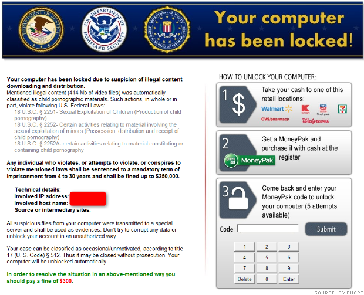

So you're cruising down a highway, all by yourself, with nothing but beautiful scenic countryside for miles. Your radio is playing your favorite song and the weather is perfect today. Nice. Off in the distance, you see a billboard. A really obnoxious billboard. It's like the hot pink letters on a navy blue background and pea green spots everywhere kind of obnoxious. Who knows what they're advertising, but you certainly don't care. So you ignore it, and do your best to look away from it, (while keeping your eyes on the road!)
That's not so bad, right? Now you can return to your nice peacful country driv- suddenly an obnoxiously loud ad takes over your radio, jarring you out of your zen-like reverie. It's that darn billboard?? How? Is that even legal? What in the world? It's no big deal, just turn off the radio and let the sounds of the road soothe you back into your zen. Ahhh...
Ok, life is good again. Oops. Spoke too soon. Your car suddenly stops working, right in the middle of the highway. And out of nowhere, some shady guy in an obviously fake police uniform comes up to you, telling you you're a heinous criminal, and you're going to jail, unless you can pay him $300.00 in an untraceable transaction. If you do that, your car will work again and you'll be on your way. What in the what? All because you went on a country drive?
Craziness, right? What could you do? You could always ignore the fake-cop, fix your car yourself and drive off. But what if you don't have the mechanical skill to fix your own car, and you don't have the money to pay a mechanic? Or what if you have no idea what a real cop would look or behave like, and you can't tell if he's legit or not? Welcome to the world of malvertising.
Malvertising is the act of using online advertising to sneak malware onto unsuspecting computers. Well, the users are unsuspecting. I guess the computers could be unsuspecting too, because as computers, they can't feel suspicion. Regardless, malware is foisted upon people who never saw it coming! And it's a growing trend, according to CNN.com, who states "the ad tech industry recognizes this is a serious problem."
Wait, you say, I'm not an idiot. I don't click on random ads. Heck, I don't click on any ads! That's the nefarious part; you don't have to click on them. You can be on your favorite trusted website, just cruising their content, and their content alone, and in the background, malicious software is being surreptitiously sent to your computer.
Pfft. Like any respectable site would allow those kind of ads, you say? Hmmm... In early January of this year, anyone who visited sites like The Huffington Post, GameZone, or LA Weekly, among other sites, and were served one of several ads were victims of ransomware, ie software that cuts off access to the mouse and keyboard until the user pays the criminals. This particular piece of ransomware would state they were from your nation's authorities, depending on your location. In the United States, victims saw this:

According to CNN.com, this was a relatively unsophisticated piece of ransomeware, and no files were encrypted. So if you were hit by it, just reboot in safe mode and clean your computer out with an antivirus scan.
It really makes me wish those advertising services would stop allowing this active content in their ads. It's time to go back to just plain image ads! Does anyone really appreciate any of those auto-start ads? Seriously? When they start talking to you out of nowhere? And if you're like me and have a million tabs open, it becomes a mad hunt to find the one with the ad THAT MUST BE KILLED AT ALL COSTS.
Anyways, what can the user do to prevent this in the future? Well, with this particular attack, only older browsers were taken advantage of, so it helps to keep your broser current. Also, Internet Explorer is a big no-no, apparently, since it was targeted. And if you were using an old version of Internet Explorer? You deserve what you get! This is why we use better browsers, folks! Your safest bet, of course, would be to block the ads entirely.
Or, you could always go my preferred route: pack a jetpack and a bazooka in the trunk, blow the fake-cop away and fly off into the sunset. Sunglasses optional, but very cool. That's right, we revisted the highway metaphor. What, you're going to complain to a lady with a jetpack and a bazooka?
I thought not. Keep your browsers current, folks. And friends don't let friends use Internet Explorer.